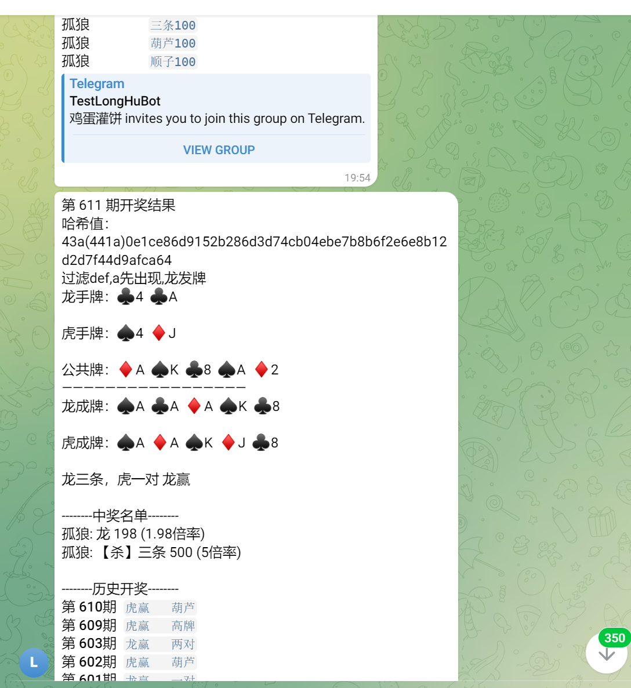

龍虎德州
產品資料描述快節奏操作及持續開獎體驗。
線上 README 明確展示龍虎德州快節奏玩法及 Hash 驗證；牌型、賠率和結算以完整設定為準。

龍虎德州原始碼：快節奏互動、持續開獎、記錄、自動結果通知及Hash驗證流程，包含真實Telegram與H5截圖。
產品資料描述快節奏操作及持續開獎體驗。
系統在 Telegram 或 H5 頁面發布結果。
協助核對公開結果，上線前仍需審計隨機源及種子流程。
圖片來自線上 README 的現有產品資料，不是示意圖。


| Web 與服務 | PHP、H5 Web；公開目錄包含 Composer 自動載入及 PHP 測試入口 |
|---|---|
| Telegram Bot | README 說明使用 Telegram Bot API，完整 Bot 程式碼需核對交付包 |
| 資料與狀態 | README 說明 MySQL + Redis；公開快照沒有完整資料庫腳本 |
| 遊戲樣本 | context.h、user.cpp 等可見程式碼檔案 |
| 營運後台 | 真實截圖可驗證產品介面，完整後台原始碼需另行確認 |
公開倉庫是有限程式碼快照；完整 Bot、後端、資料庫、營運後台及部署包須以授權交付清單為準。